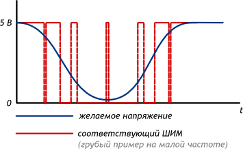
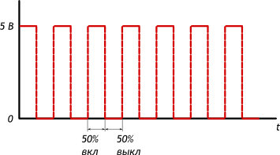
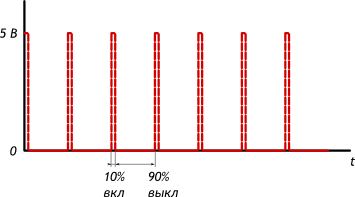
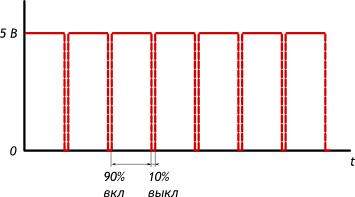

Микроконтроллеры обычно не могут выдавать произвольное напряжение. Они могут выдать либо напряжение питания (например, 5 В), либо землю (т.е. 0 В)
Но уровнем напряжения управляется многое: например, яркость светодиода или скорость вращения мотора. Для симуляции неполного напряжения используется ШИМ (Широтно-Импульсная Модуляция, англ. Pulse Width Modulation или просто PWM)

Выход микроконтроллера переключается между землёй и Vcc тысячи раз в секунду. Или, как ещё говорят, имеет частоту в тысячи герц. Глаз не замечает мерцания более 50 Гц, поэтому нам кажется, что светодиод не мерцает, а горит в полсилы.
Аналогично, разогнанный мотор не может остановить вал за миллисекунды, поэтому ШИМ-сигнал заставит вращаться его в неполную силу.
Отношение времени включения и выключения называют скважностью (англ. duty cycle). Рассмотрим несколько сценариев при напряжении питания Vcc равным 5 вольтам.


